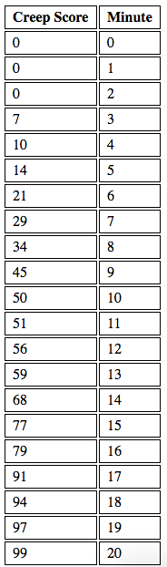

Making a Creep Score Counter
Using AJAX syntax to query the Riot API and make a table from your most recent League Match
Putting it all together
We're now going to combine our knowledge of making AJAX requests, our knowledge of handling linked requests and our knowledge of the Riot API's Match Data JSON response to get the creep score at different minutes of your most recent League match. We have provided the code for you but we are not going to explain how it works. Instead, we have included comments throughout the code that reference different pages we've presented that are relevant to the code that will help you understand what is going on. Remember, you have seen everything here before!
Below we have included an example of what an output may look like.
Parting Thoughts
Hopefully, this guide has given you a basic understanding of how to retrieve information from the Riot API using client-side javascript. Hopefully as we delved into more complicated topics you began to see how much information we can get by automating our retrieval process. With your knowledge in hand check out sites like Champ GG and see the really powerful web applications that can be built with these ideas in mind. One last thing to mention, however, is that Riot takes securing their API Keys very seriously. Large scale websites that work with the RIOT API must make server side HTTP requests in an effort to keep their keys hidden. As a result, you cannot publish any scripts that use your API Key. This does not prevent you, however, from making your calls locally and then publishing the correspoding data.